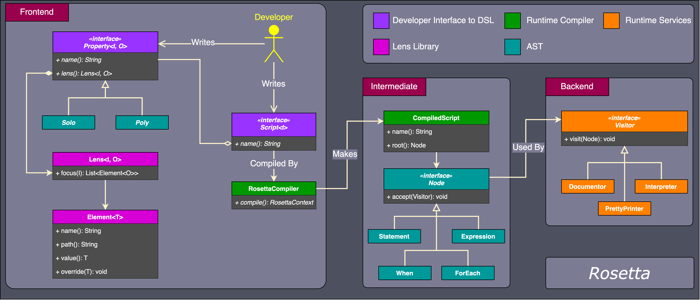
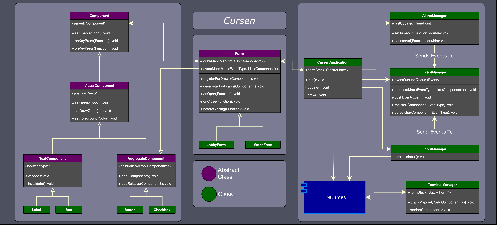
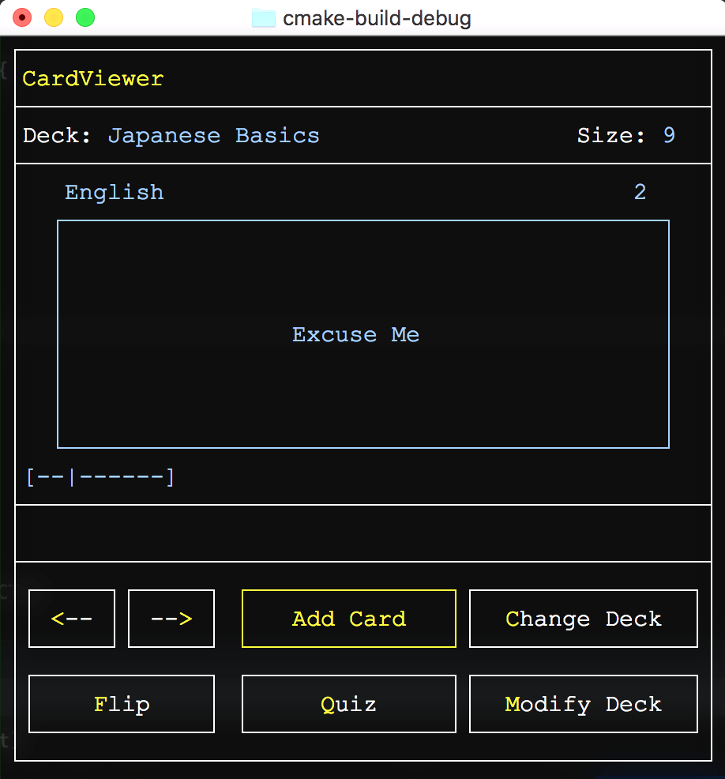
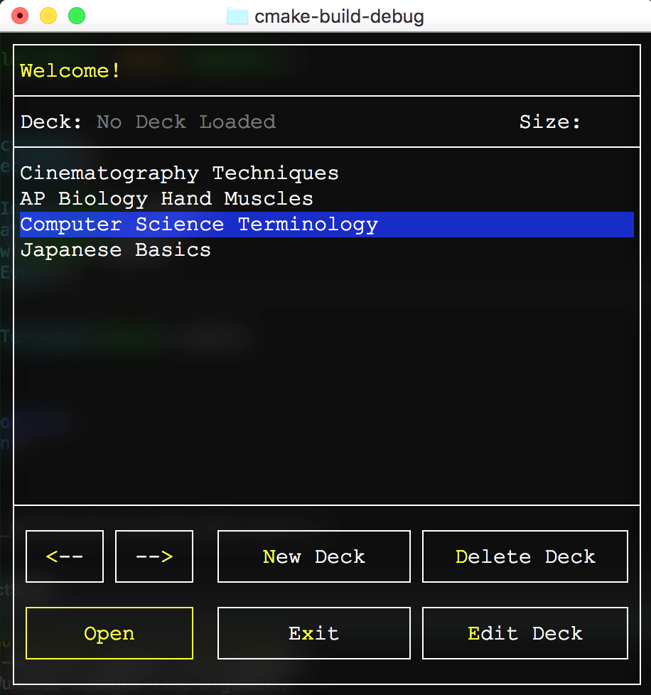
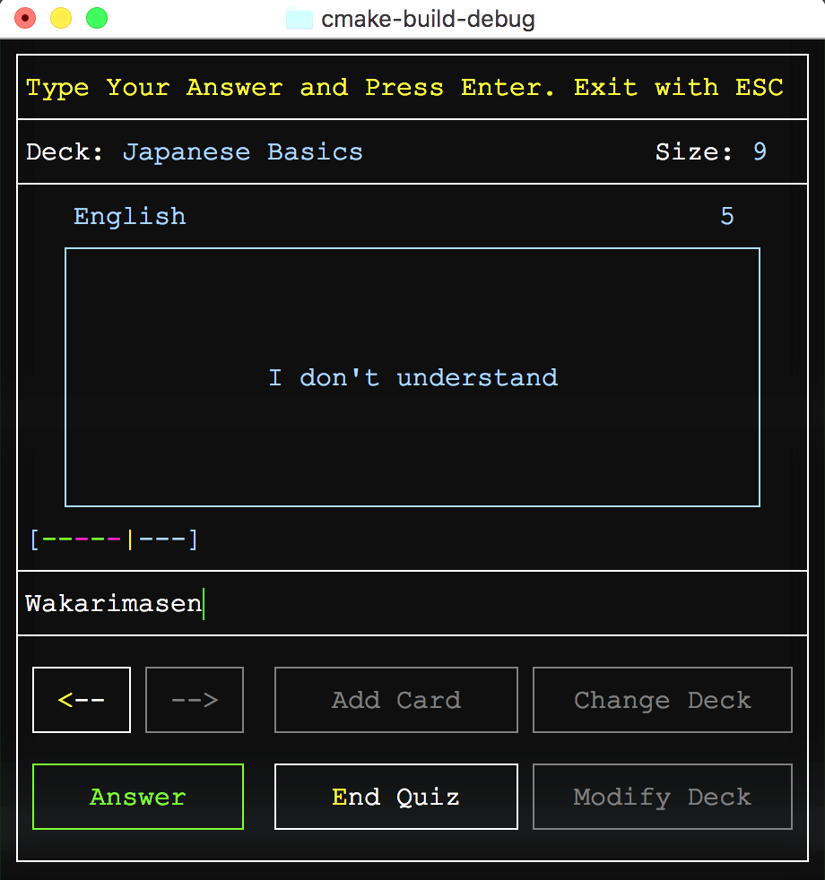

A text-based recreation of Mattel's card game written in C++ and built using my custom text-based game engine Cursen.
Uno features text-based graphics with fluent animations, non-blocking IO, and 4-player online multiplayer.
I developed this game in parallel with its engine, which handles the event loop for the game and rendering the text graphics.
Check out it's project section to learn more about how Cursen handles those tasks.
A text-based recreation of Mattel's card game written in C++ and built using my custom text-based game engine Cursen.
Uno features text-based graphics with fluent animations, non-blocking IO, and 4-player online multiplayer.
I developed this game in parallel with its engine, which handles the event loop for the game and rendering the text graphics.
Check out it's project section to learn more about how Cursen handles those tasks.
My process for developing this game was to first create a Lobby screen where players connect together, chat, and change their game color, and then work on the Match screen where the actual gameplay occurs.
I first got the simpler Lobby screen working with networking where the toughest challenge was connecting players to the host, then I moved on to the Match screen where the challenge was then orchestrating the various game state messages between players.
To handle multiple game modes while reusing core UI elements I used a Strategy Pattern by defining a Controller abstract base class in which different game mode subclasses could implement.
These Controllers override various abstract methods that change the interface, controls, and game flow based on the game mode selected at the start.
I also used a State Pattern to block user input during event scenes and animations whereby changing the input state was as simple as changing a pointer.
Implementing the multiplayer support was the greatest challenge in developing the game. Synchronizing the game state with multiple computers over plain sockets required me to define protocols for my program in how communication would occur and what form the messages would take. My strategy for connecting players together was to have one player act as the host player who holds the authoritative game state and all changes to the game state go through them. Other players would then connect to the host player's IP address from the game lobby. The host player enforces the game's rules by validating that messages sent by other players are legal game actions and applying them to the game state. Connecting players simply update their game states whenever the host sends a new one and render animations based on game events.
 I implemented my messaging system using a Command Pattern, where each possible message is defined as a subclass of an abstract
I implemented my messaging system using a Command Pattern, where each possible message is defined as a subclass of an abstract Command base class and would fill in the details of what to do when executed and how to be serialized.
Once the Command is serialized, additional header information is written that tells the receiver which command type it is as well as how many bytes the message is.
The receiver first checks how big the message is and continues reading until it consumed n-many bytes.
The receiver then checks the header of the message for a byte representing which class to deserialize the raw buffer to, then it deserializes the buffer and executes the command.
All changes to the game state get translated into messages that are forwarded to a command queue for serialization and distribution.
Depending on the game mode and network role, some messages are looped back to the sender or not sent at all and just executed locally.
 Prototype rules engine and embedded domain-specific language developed at CNA that can generate human-readable documentation from coded business rules.
The project was born from a request from the business to explore ideas on how to automate our rules documentation, which at the time was a manually-maintained 300+ row Excel spreadsheet.
Our business rules change constantly but the spreadsheet would not always get updated, causing our documentation to drift further and further out of sync with the code and confusing our partners.
The way that Rosetta works is that developers write validation and transformation
Prototype rules engine and embedded domain-specific language developed at CNA that can generate human-readable documentation from coded business rules.
The project was born from a request from the business to explore ideas on how to automate our rules documentation, which at the time was a manually-maintained 300+ row Excel spreadsheet.
Our business rules change constantly but the spreadsheet would not always get updated, causing our documentation to drift further and further out of sync with the code and confusing our partners.
The way that Rosetta works is that developers write validation and transformation Scripts that define what are acceptable values for Properties incoming JSON requests as well as defaults if a value is missing.
At runtime those Scripts get compiled and can be rendered into an Excel spreadsheet for documentation or be executed against real JSON requests.
The engine is conceptually broken down into three modules, the frontend, intermediate, and backend modules.
The frontend is what scriptwriters interact with, it consists of the Kotlin classes that define the embedded DSL and how that DSL is transformed into an in-memory AST.
The backend is what users interact with at runtime, it consists of services that accept the AST as input, notably the Documentor and Interpreter.
The Documentor generates tabulated documentation with each row being a JSON property and its rules while the Interpreter executes the rules themselves to generate invalid and missing data messages.
 A notable challenge in developing the frontend module was designing a DSL that could be expressive enough handle many validation scenarios while being intuitive enough so developers can pick it up easily. Many features would have been nice to include into the language, but it was often the case that their behavior was too subtle to be expressed fully in the language itself. It was a constant tug-of-war which required repeated experimentation and feedback from peers to get right. I ended up choosing Kotlin to create an embedded DSL using its DSL building features which made it possible to leverage our IDEs autocomplete features and type safety when writing rules.
{kind=link}
 To give the
To give the Scripts the ability to interact with properties in the JSON payload, I developed a Lens library for Kotlin.
Lenses are a series of setters & getters that are used traverse the request POJO object tree while protecting against null pointer exceptions and generating a JSON path from class metadata, such as annotations.
My lens library makes use of reflection and Kotlin's reified inline functions to automatically determine from a setter or getter what the underlying field is to generate an object path.
This allows the DSL writers to free themselves from the burden of crafting JSON paths or checking for null pointers, the lenses handle it automatically with the added benefit of retaining generic type information.
Properties themselves come in two flavors, Solo and Poly properties, where Solos always return 1 nullable item while Polys return 0 to many items.
At runtime, the DSL is translated to an in-memory AST that represents the business logic. I used a Visitor pattern to develop an Interpreter and Documentor which would traverse the tree structure to either execute the rules on a JSON request or produce documentation. The Interpreter would handle testing the request generating helpful error messages while the Documentor could output the logic as an Excel spreadsheet or JSON for web consumption.
A port of Midway's Space Invaders written with C# without the use of generics, arrays, builtin containers, or other advanced features. Developed as a class project in a class of Software Architecture over a 10-week period as a pedagogical exercise in learning about software design patterns. Students received a minimal game engine to kickstart their development that was able to draw a 2D sprite and play a sound, the rest of the game was up to us. The goal of the class was to not just rewrite Space Invaders but to do so with solid architectural principals that we would learn about throughout the course.
One of the concerns with building a real-time game when using a managed language like C# is the pauses caused by garbage collection and object allocation.
To mitigate this, Object Pools were utilized that were pre-allocated with game objects and would hold onto released objects in an internal Linked List.
This helped prevent the garbage collector from trying to reclaim memory and led to a smoother gameplay experience.
This also made "allocating" a new object as simple as popping a node off the list of free objects.
I wrote an ObjectPool abstract base class that would manage the lists of free and allocated objects and subclasses would implement how specific objects are allocated.
To handle the alien grid efficiently, a combination of patterns were used. A Composite Pattern was used to organize the aliens into a tiered hierarchy from an individual alien at the bottom, to a column of aliens, and then to the entire grid at the top. By organizing the aliens in such a manner I reduced the amount of collision checks by first checking if an upper tier faced a collision before checking lower tiers. Double dispatch was used in a Visitor Pattern to handle checking for collisions between two game objects.
A text-based user interface (TUI) framework developed for C++ that can be used to create games and applications with text-based graphics. The name Cursen comes from "curses engine" as this project was conceived as a game engine that uses the ncurses library to render text graphics in the terminal. My goal was to construct a solid user interface framework that provided all the common functionalities I needed for writing text games and then use it to create other text-based applications, such as Uno. I also wanted to try and build a medium-scale application where I can apply many of the concepts I learned about during my senior year, like software design patterns and networking.
The observable layout of Cursen was inspired by WinForms, such as how Cursen's UI Component objects are arranged within Form objects.
Cursen maintains internally a Form stack, with each Form keeping track of things like timer events, callbacks, and which Components to draw.
Components register themselves to their parent Forms and whatever Form is top of the stack those Components will be drawn and become interactable.
This design makes it easy for users to write games and applications with multiple screens that transition from one to the next while maintaining the states of the previous screens.

User interface elements as well as any object that wishes to receive events from Cursen inherit from a Component abstract base class or one of it's abstract subclasses, depending on the purpose.
The Component class handles globally common functionality event registration, the VisualComponent subclass adds in properties describing where on screen the object should be drawn.
VisualComponent has two subclasses, TextComponent which defines a 2D chtype array for drawing text graphics onto the terminal and AggregateComponent which is used to group multiple Components together into a single entity.
Cursen provides a few common UI elements builtin such as Labels, Boxes, Lines, Buttons, and CheckBoxes.
If users don't want to have to manually draw their own element with text graphics they can use the builtin elements and group them together with an AggregateComponent.
{kind=link}
An EventManager handles dispatching application events to registered Components that occur in Cursen's event loop.
At runtime, events such as key presses and timer expirations are placed onto an EventQueue to be processed.
I used an Observer Pattern to handle how Components register themselves for callbacks, where events are observed by Components.
Ultimately it's worth noting that the app is far from perfect, there are a lot of places that I wished I would've done better. One thing I'd improve is limiting the communications between managers and avoid having few manager classes do too much.
A small AI framework written in Java that can be used to solve single-agent games using a variety of different search algorithms.
The program defines a PuzzleSolver class that implements generic search algorithm that continuously expands puzzle states until it finds the goal state.
The solver accepts as input a SolveStrategy that specifies how nodes are enqueued for search and my program predefines strategies for BFS, DFS, A*, and more.
Users of the framework implement the provided Puzzle and Action interfaces that fill in the details of how to compare puzzle states and what actions can be taken for a given state.
I developed this program as a challenge to myself during a college Intro to AI course. One of our first assignments was to build a solver that can solve just the Eight Puzzle game, but I thought it would be neat to try and build my solution in a generic way so I can reuse much of the search code for different games, like Lights Out.

 Console C++ program that allows you to create decks of flash cards and test yourself with a quiz game. I wrote this program in 2018 after completing my first college C++ course as an exercise to further understand both C and C++. I restricted my use of STL, strings, templates, and other advanced features so that I can also further understand the C language, just with the addition of classes.
{kind=link}
The program uses entirely text-based graphics to represent various UI components and a virtual cursor for the user to navigate the screens. Users can create decks of flash cards where each card has a front and back text as well as test themselves with a quiz mode that shuffles the cards. Decks can be saved to a plain text file and loaded after the application shuts down. Manual memory management was tough when most of my prior experience was in managed languages like Java and this program needed to use a lot of strings. To help mitigate this I looked for opportunities to use stack memory whenever I knew at compile time how much data I might need and only use heap memory for dynamically-sized arrays or Linked Lists.

This was my largest text-based application at the time, with multiple screens, saved data, various visual components, user input, etc. During this time I still lacked experience in software design patterns for user interfaces, so the code is a bit rough around the edges. This experience inspired me to later create a text-based UI framework called Cursen to assist me in making future text games.
 {kind=link}
{kind=link}
 A recreation of the classic game Tetris with text-based graphics written in Python 3.
Created during my Junior year at DePaul University, my goal with this project was to experiment with the curses module and threading to create a text-based real-time game that deals with user-input concurrently with computer input.
A recreation of the classic game Tetris with text-based graphics written in Python 3.
Created during my Junior year at DePaul University, my goal with this project was to experiment with the curses module and threading to create a text-based real-time game that deals with user-input concurrently with computer input.
This project was my first attempt at making a real-time game, previously I've only worked on turn-based games like Chess and Uno. In order to make my game real-time I needed a way of getting individual key presses without blocking the event loop and a way to update the screen continuously. I ended up learning about the ncurses Python library which solved both of these problems and gave me a solid text graphics foundation.
I also experimented with Python's threading module in order to make the tetris piece automatically fall when the user waits long enough.